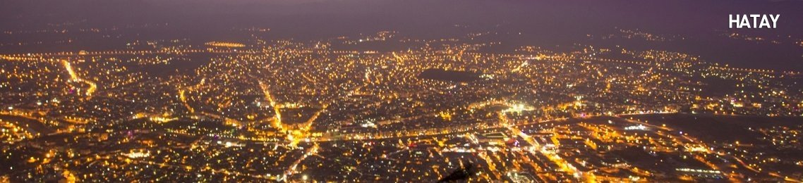

| Home | Local Dishes | Historical Places | Useful Links | About Me | Contact Me | Registration |

HATAY - THE CRADLE OF CIVILIZATION
Hatay - Antakya, known biblically as Antioch (Antiocheia) and more recently as Hatay, is the chief town of the frontier province of the very same name in southeastern Turkey. The province lies about 30 km from the Mediterranean in the alluvial plain of the Asi (the ancient Orontes) at the foot of Mount Habib Neccar (ancient Mons Silpius), and it is surrounded by large expanses of olive groves.
The climate conditions being conducive to productivity, the fertile Antakya region has been luring migrants to the region throughout history. The city was also famous as a center of artistic, scientific and commercial activities in the Hellenistic world, a few remnants of which still remain. Iron is still mined in this area and Hatay is an important transportation link between Syria and other parts of Turkey.
The most convenient ports for suitable routes to Mediterranean from Mesopotamia are also located in this region. With its current faith tourism centers, ancient cities steeped in history and beautiful landscapes, the province of Hatay is off the beaten track, but a detour definitely worth its while.